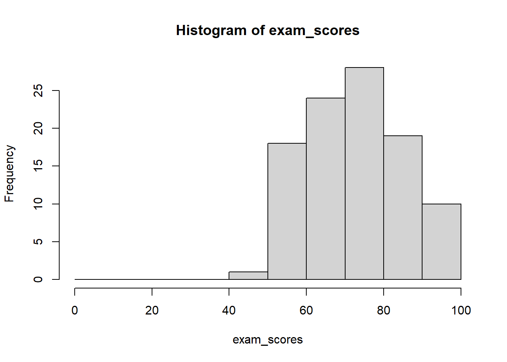
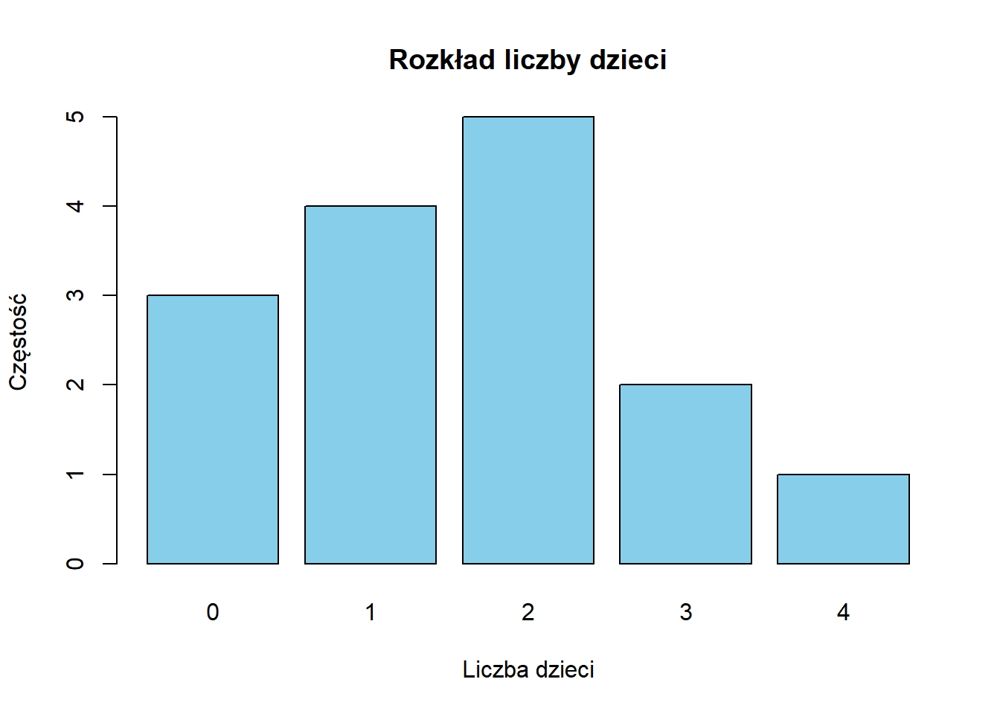

Statystyka i nauka o danych to zarówno sztuka, jak i nauka wydobywania wiedzy z danych – pomagają nam zrozumieć świat poprzez metodyczną analizę zebranych informacji.
Statystyka i nauka o danych dostarczają niezbędnych narzędzi dla badaczy nauk społecznych, niezależnie od specjalizacji. Bez względu na to, czy studiujesz nauki polityczne, ekonomię, socjologię czy inną dziedzinę nauk społecznych, narzędzia te umożliwiają:
Analizę trendów i zachowań społecznych
Mierzenie skutków różnych polityk
Formułowanie wniosków w oparciu o dowody empiryczne, a nie intuicję
Statystyka dostarcza matematycznych podstaw do analizy danych, w tym projektowania badań, syntezy informacji i testowania hipotez. Nauka o danych rozszerza te możliwości, łącząc statystykę z umiejętnościami programowania i wiedzą dziedzinową, umożliwiając pracę ze złożonymi zbiorami danych.
W dzisiejszej erze cyfrowej, wraz z szybko rosnącą ilością dostępnych danych, kompetencje analityczne stały się niezbędne dla współczesnych badaczy i specjalistów nauk społecznych.
Uwaga
W naukach społecznych nauka o danych stanowi zestaw metod do rozwiązywania złożonych problemów badawczych – łącząc podejścia statystyczne, narzędzia obliczeniowe i specjalistyczną wiedzę w celu skuteczniejszej analizy procesów społecznych.
2.2 Związek między Statystyką a Nauką o Danych
Zamiast traktować statystykę i naukę o danych jako odrębne dyscypliny, korzystniej jest postrzegać je jako podejścia uzupełniające się w ramach spektrum metod analizy danych. Naukę o danych można rozumieć jako współczesne rozszerzenie tradycyjnej statystyki, które ewoluowało w odpowiedzi na:
Nowe możliwości technologiczne
Potrzebę analizy coraz bardziej złożonych danych społecznych
Dostępność narzędzi obliczeniowych do przetwarzania dużych zbiorów danych
2.3 Podstawowe Pojęcia w Nauce o Danych i Statystyce
2.3.1 Dane i Populacje
Dane: Informacje zebrane podczas badania – obejmują odpowiedzi z ankiet, wyniki eksperymentów, wskaźniki ekonomiczne, treści z mediów społecznościowych lub wszelkie inne mierzalne obserwacje.
Populacja: Pełny zbiór jednostek (osób, instytucji, zdarzeń), których dotyczy badanie – cała grupa, na temat której badacz chce wyciągnąć wnioski.
Przykład: W badaniu preferencji wyborczych populację stanowią wszyscy obywatele uprawnieni do głosowania w danym kraju.
Próba: Podzbiór populacji wybrany do badania. Reprezentatywna próba odzwierciedla kluczowe cechy populacji docelowej we właściwych proporcjach.
Przykład: Zamiast badać wszystkich uprawnionych do głosowania, badacze mogą analizować 1500 losowo wybranych osób, uwzględniając odpowiedni rozkład wieku, płci, wykształcenia i regionu zamieszkania.
Właściwie dobrana próba umożliwia wnioskowanie o całej populacji przy jednoczesnym znacznym zmniejszeniu kosztów i czasu badań.
Dobór próby: Procedura wybierania osób z populacji do badania. Nieobciążona metoda doboru próby daje każdej osobie w populacji równą szansę wyboru, zapewniając reprezentatywne wyniki.
Wnioskowanie statystyczne: Proces wyciągania wniosków o populacji na podstawie danych z próby. Obejmuje:
Obliczanie oszacowań parametrów populacji
Ocenę wiarygodności tych oszacowań
Testowanie hipotez dotyczących cech populacji
Proces wykorzystania próby do oszacowania parametru populacji. W tym przykładzie, w próbie 10 osób stwierdzono, że 6 posiada iPhone’a, co daje szacowaną proporcję w populacji na poziomie 60%. Rzeczywista proporcja w populacji wynosi 53,8%.
2.3.2 Wnioskowanie Statystyczne: Jak Mała Próba Może Reprezentować Dużą Populację?
Kiedy ankieterzy badają tylko 1000 wyborców, aby przewidzieć wynik wyborów z 30 000 000 uprawnionych do głosowania (zaledwie 0,003% populacji), może się to wydawać zagadkowe. Jak tak niewielki ułamek może powiedzieć nam coś o całości?
To podobne do próbowania zupy. Gdy gotujesz duży garnek zupy i dokładnie ją mieszasz, nie musisz zjeść całego garnka, aby wiedzieć, jak smakuje. Wystarczy jedna łyżka – o ile zupa jest dobrze wymieszana.
2.3.2.1 Dlaczego Losowy Dobór Próby Działa
Losowy dobór próby działa dzięki trzem kluczowym zasadom:
Równe szanse: Każda osoba w populacji ma taką samą szansę na wybór, co zapobiega systematycznemu błędowi.
Reprezentatywna różnorodność: Gdy każdy ma równą szansę, naturalnie otrzymujesz osoby ze wszystkich różnych grup w mniej więcej takich samych proporcjach, w jakich występują w populacji.
Przykład: Jeśli 51% wyborców to kobiety, to około 51% twojej losowej próby prawdopodobnie będą stanowić kobiety (plus minus pewne losowe wahania).
Prawo wielkich liczb: Wraz ze wzrostem wielkości próby (n), losowe wahania stają się mniej wpływowe, a statystyki próby zbliżają się do prawdziwych wartości populacji.
Przykład: Jeśli rzucisz monetą 10 razy, możesz otrzymać 7 orłów (70%). Ale jeśli rzucisz nią 1000 razy, jest znacznie bardziej prawdopodobne, że otrzymasz około 500 orłów (50%).
Bez właściwego losowego doboru próby można łatwo uzyskać próbę obciążoną. Na przykład, gdybyś przeprowadzał ankiety tylko wśród osób w centrum handlowym w dni powszednie rano, pominąłbyś większość pracujących osób i studentów, co dałoby zniekształcony obraz populacji.
2.3.3 Zrozumienie Błędu Statystycznego
Korzystając z próby do poznania populacji, nieuchronnie napotykamy błąd statystyczny:
Błąd statystyczny to różnica między naszym oszacowaniem z próby a prawdziwą wartością w populacji. Możemy podzielić go na dwa główne typy:
Błąd losowy (błąd próbkowania, sampling error): Naturalna zmienność, która występuje przypadkowo przy wyborze losowej próby. Dzieje się tak po prostu dlatego, że patrzymy na część, a nie na całą populację.
Błąd standardowy mierzy ten błąd próbkowania. Pokazuje, jak bardzo nasze statystyki z próby (takie jak średnie czy proporcje) różniłyby się, gdybyśmy wielokrotnie pobierali różne próby z tej samej populacji.
Mniejsze błędy standardowe wskazują na bardziej precyzyjne oszacowania
Błąd standardowy zmniejsza się wraz ze wzrostem wielkości próby (w przybliżeniu proporcjonalnie do 1/√n)
Błąd standardowy zależy od zmienności w populacji
Błąd systematyczny (błąd niepróbkowy, non-sampling error): Występuje, gdy nasze metody zbierania danych systematycznie zniekształcają wyniki w jednym kierunku. W przeciwieństwie do błędu próbkowania, błędu systematycznego NIE MOŻNA zmniejszyć przez zwiększenie wielkości próby.
Źródła błędu systematycznego obejmują:
Błąd selekcji: Gdy metoda wyboru próby faworyzuje pewne grupy (np. ankiety telefoniczne mogą pomijać osoby bez telefonów)
Błąd odpowiedzi: Gdy respondenci udzielają niedokładnych odpowiedzi (np. zawyżanie dochodów)
Błąd braku odpowiedzi: Gdy osoby, które odmawiają udziału, różnią się od tych, które uczestniczą
Błąd pomiaru: Wynikający z niedokładnych narzędzi lub metod pomiarowych
Na przykład, jeśli obliczamy średni wzrost z próby, błąd standardowy mówi nam, jak bardzo ta średnia mogłaby się różnić, gdybyśmy wielokrotnie pobierali różne losowe próby. Jednak jeśli nasze urządzenie pomiarowe jest wadliwe i zawsze dodaje 2,5 cm do każdego pomiaru, mamy błąd systematyczny, którego zwiększenie wielkości próby nie naprawi.
Dobry projekt badania musi uwzględniać oba typy błędów:
Błąd próbkowania można zmniejszyć zwiększając wielkość próby
Błąd systematyczny można zmniejszyć tylko przez ulepszenie metod zbierania danych
2.3.4 Dobór Wielkości Próby
Niezbędna wielkość próby zależy od trzech głównych czynników:
Jaki rodzaj oszacowania wykonujesz? (proporcja czy średnia)
Jak dokładne musi być twoje oszacowanie?
Większa dokładność = większa próba
Przykład: Oszacowanie z dokładnością do ±1% wymaga około 9 razy więcej osób niż oszacowanie z dokładnością do ±3%
Jak zróżnicowana jest twoja populacja?
Dla proporcji: Maksymalna zmienność występuje przy 50%, minimalna przy 0% lub 100%
Dla średnich: Sprawdź, jak bardzo pomiary różnią się między sobą (wariancja)
2.3.4.1 Uwagi dotyczące małych populacji
Pracując z małymi populacjami (np. 1000 osób lub mniej):
Istnieją znaczące różnice metodologiczne w porównaniu do dużych populacji
Prosta próba losowa tradycyjnie zakłada losowanie ze zwracaniem
W praktyce badawczej zazwyczaj stosuje się losowanie bez zwracania
Im mniejsza populacja, tym większa różnica między tymi podejściami
Współczynnik korekty dla populacji skończonej staje się niezbędny podczas badania więcej niż 5-10% populacji
Praktyczne zalecenia dla małych populacji:
Dla populacji poniżej 200 jednostek, rozważ pełny spis (badanie całej populacji)
Stosuj odpowiednie formuły statystyczne uwzględniające losowanie bez zwracania
Standardowe formuły dla błędów standardowych oparte na losowaniu ze zwracaniem przeszacują błąd w małych populacjach
Jasno dokumentuj mechanizm doboru próby w raportach badawczych
Wyjaśnienie różnicy:
Losowanie ze zwracaniem: każda jednostka ma stałe prawdopodobieństwo wyboru w każdym losowaniu (np. 1/N)
Losowanie bez zwracania: prawdopodobieństwo wyboru zmienia się w kolejnych losowaniach (z 1/N na 1/(N-1), 1/(N-2) itd.)
W dużych populacjach różnica jest minimalna, w małych - fundamentalna
Schematy losowania bez zwracania mają często mniejszą wariancję estymatora niż przy losowaniu ze zwracaniem
2.3.5 Proporcje a Średnie
2.3.5.1 Proporcje (odsetki)
Przy szacowaniu proporcji (np. odsetka wyborców popierających danego kandydata), wymagana wielkość próby zależy w dużej mierze od tego, jak blisko ta proporcja jest 50%.
Dlaczego proporcje bliskie 50% wymagają większych prób:
Spójrzmy na konkretny przykład z różnymi wielkościami próby:
Prawdziwa Proporcja w Populacji
Wielkość Próby
Typowy Margines Błędu
50% (maksymalna niepewność)
100
±10 punktów procentowych
50% (maksymalna niepewność)
400
±5 punktów procentowych
50% (maksymalna niepewność)
1000
±3 punkty procentowe
10% (mniejsza niepewność)
100
±6 punktów procentowych
10% (mniejsza niepewność)
400
±3 punkty procentowe
10% (mniejsza niepewność)
1000
±2 punkty procentowe
Te liczby pokazują dwa ważne wzorce: 1. Wraz ze wzrostem wielkości próby maleje margines błędu (porównując wiersze) 2. Przy tej samej wielkości próby, proporcje bliskie 50% mają większe marginesy błędu niż proporcje bliskie 0% lub 100% (porównując 50% vs 10%)
Dzieje się tak, ponieważ proporcje podlegają rozkładowi dwumianowemu, gdzie wariancja jest maksymalna przy p=0,5 (50%) i minimalna przy p=0 lub p=1 (0% lub 100%).
Wielkość populacji ma minimalny wpływ:
Dla typowego sondażu wyborczego z proporcjami bliskimi 50%, około 1000 losowo wybranych osób zapewnia dokładność około ±3 punktów procentowych. Co zaskakujące, ta wielkość próby pozostaje w przybliżeniu taka sama, niezależnie od tego, czy populacja liczy 30 000 czy 30 milionów. Ta nieintuicyjna prawidłowość wyjaśnia, dlaczego sondaże ogólnokrajowe mogą być dokładne przy stosunkowo małych próbach.
2.3.5.2 Średnie
Przy szacowaniu średniej (np. typowego dochodu gospodarstwa domowego lub wzrostu):
Średnia podsumowuje ciągłe pomiary, które mogą przyjmować wiele różnych wartości
Wielkość próby zależy głównie od tego, jak bardzo te pomiary różnią się między osobami
Kluczowe uwagi:
Populacje z bardziej zróżnicowanymi pomiarami wymagają większych prób
Dokładniejsze oszacowania wymagają większych prób
W przeciwieństwie do proporcji, nie ma “maksymalnej niepewności” przy określonej wartości
Na przykład, oszacowanie średniego dochodu może wymagać większej próby niż oszacowanie średniego wzrostu, ponieważ dochody zwykle różnią się bardziej niż wzrost
2.3.5.3 Parametry Modeli Regresji
Przy szacowaniu parametrów modeli regresji:
Czym jest regresja? Modele regresji opisują, jak jedna zmienna (zmienna zależna) odnosi się do jednej lub więcej innych zmiennych (zmiennych niezależnych). Na przykład, jak sprzedaż zależy od wydatków na reklamę lub jak plony zależą od opadów i temperatury.
Te parametry pokazują związki między zmiennymi
Wielkość próby dla modeli regresji jest bardziej złożona niż dla prostych średnich czy proporcji
Kluczowe czynniki wpływające na wymaganą wielkość próby:
Liczba zmiennych w modelu (więcej zmiennych = większa próba)
Siła badanych efektów (słabsze efekty wymagają większych prób do wykrycia)
Zmienność danych (większa zmienność = większa próba)
Złożoność modelu (bardziej złożone modele wymagają większych prób)
Proste zasady dla modeli regresji:
Podstawowa reguła: co najmniej 10-20 obserwacji na zmienną w modelu
Do wykrywania subtelnych efektów: może być potrzebne 100+ obserwacji na zmienną
Modele wielopoziomowe lub hierarchiczne: wymagają znacznie większych prób
2.3.6 Przykład Maksymalnej Niepewności: Dlaczego 50% to “Najgorszy Przypadek”
Aby zrozumieć, dlaczego proporcje bliskie 50% wymagają większych prób, przyjrzyjmy się symulacji:
Wyobraź sobie, że masz 100 monet w torbie, które są albo złote, albo srebrne. Chcesz oszacować, jaki procent stanowią złote monety, losowo wybierając 20 monet.
Scenariusz A: 50% Złotych (Maksymalna Niepewność)
Torba zawiera 50 złotych i 50 srebrnych monet (50% złotych)
Zasymulujmy losowanie 20 monet 10 różnych razy:
Losowanie 1: 8 złotych monet (40% - błąd o 10%)
Losowanie 2: 12 złotych monet (60% - błąd o 10%)
Losowanie 3: 9 złotych monet (45% - błąd o 5%)
Losowanie 4: 7 złotych monet (35% - błąd o 15%)
Losowanie 5: 11 złotych monet (55% - błąd o 5%)
Losowanie 6: 14 złotych monet (70% - błąd o 20%)
Losowanie 7: 8 złotych monet (40% - błąd o 10%)
Losowanie 8: 10 złotych monet (50% - idealnie!)
Losowanie 9: 7 złotych monet (35% - błąd o 15%)
Losowanie 10: 12 złotych monet (60% - błąd o 10%)
Te wyniki różnią się znacznie, od 35% do 70%, ze średnim błędem wynoszącym 10 punktów procentowych!
Scenariusz B: 10% Złotych (Mniejsza Niepewność)
Torba zawiera 10 złotych i 90 srebrnych monet (10% złotych)
Zasymulujmy losowanie 20 monet 10 różnych razy:
Losowanie 1: 1 złota moneta (5% - błąd o 5%)
Losowanie 2: 2 złote monety (10% - idealnie!)
Losowanie 3: 3 złote monety (15% - błąd o 5%)
Losowanie 4: 1 złota moneta (5% - błąd o 5%)
Losowanie 5: 2 złote monety (10% - idealnie!)
Losowanie 6: 0 złotych monet (0% - błąd o 10%)
Losowanie 7: 3 złote monety (15% - błąd o 5%)
Losowanie 8: 2 złote monety (10% - idealnie!)
Losowanie 9: 1 złota moneta (5% - błąd o 5%)
Losowanie 10: 2 złote monety (10% - idealnie!)
Te wyniki pozostają znacznie bliżej prawdziwych 10%, wahając się od 0% do 15%, ze średnim błędem wynoszącym tylko 4 punkty procentowe.
To pokazuje, dlaczego potrzebujemy większych prób, gdy proporcja jest bliska 50% - naturalna zmienność jest znacznie większa. Gdy prawdziwa proporcja wynosi 50%, każde odchylenie od tej idealnej równowagi jest równie prawdopodobne w dowolnym kierunku, tworząc maksymalną niepewność.
2.3.6.1 Przykład Sondażu Opinii: Popularni a Niepopularni Kandydaci
W sondażu wyborczym z 1000 osób:
Dla głównego kandydata z poparciem 40%:
Nasza dokładność wyniosłaby około ±3 punktów procentowych
Możemy oszacować jego poparcie między 37% a 43%
Dla kandydata z mniejszym poparciem 3%:
Nasza dokładność wyniosłaby około ±1 punkt procentowy
Możemy oszacować jego poparcie między 2% a 4%
Ważne wyjaśnienie dotyczące dokładności:
Dokładność bezwzględna (w punktach procentowych):
Dla kandydata z mniejszym poparciem (3%): ±1 punkt procentowy (mniejszy błąd bezwzględny)
Dla głównego kandydata (40%): ±3 punkty procentowe (większy błąd bezwzględny)
Dokładność względna (jako proporcja oszacowania):
Dla kandydata z mniejszym poparciem (3%): ±1 punkt procentowy to 33% jego poziomu poparcia
Dla głównego kandydata (40%): ±3 punkty procentowe to tylko 7,5% jego poziomu poparcia
To wyjaśnia, dlaczego sondaże mogą wiarygodnie wykrywać obecność kandydatów z mniejszym poparciem, ale mogą mieć trudności z precyzyjnym mierzeniem małych zmian w ich poziomach poparcia. Ta sama wielkość próby daje różne dokładności bezwzględne w zależności od tego, jak blisko proporcja jest 50%.
2.3.7 Podsumowanie: Kluczowe Punkty do Zapamiętania
Statystyka i nauka o danych dostarczają niezbędnych narzędzi do zrozumienia zjawisk społecznych poprzez analizę danych.
Właściwie dobrane próby pozwalają na wiarygodne wnioskowanie o całych populacjach bez badania wszystkich.
Błąd statystyczny występuje w dwóch formach:
Błąd losowy (zmniejszany przez większe próby)
Błąd systematyczny (zmniejszany przez lepszą metodologię)
Potrzebna wielkość próby zależy od:
Co mierzysz (proporcje czy średnie)
Pożądanej dokładności
Zmienności w populacji
W przypadku proporcji, wartości bliskie 50% wymagają większych prób
Małe populacje wymagają specjalnych rozważań dotyczących doboru próby i mogą korzystać z współczynnika korekty dla populacji skończonej.
Zrozumienie tych podstawowych pojęć pozwoli ci lepiej projektować i interpretować badania w naukach społecznych.
Data Generating Process i Superpopulacja w kontekście badań statystycznych
W statystyce i ekonometrii często posługujemy się pojęciami populacji i próby. Jednak dla pełnego zrozumienia statystycznych modeli warto wprowadzić dwa dodatkowe koncepty: data generating process (DGP) oraz superpopulację. Pojęcia te pomogą lepiej zrozumieć, w jaki sposób powstają dane, które analizujemy.
2.3.8 Podstawowe pojęcia
Populacja: Zbiór wszystkich jednostek (osób, firm, krajów itp.), które są przedmiotem naszego badania. Przykładowo, wszystkie gospodarstwa domowe w Polsce.
Próba: Podzbiór populacji, który badamy, aby wyciągnąć wnioski o całej populacji. Przykładowo, 1000 losowo wybranych gospodarstw domowych w Polsce.
2.3.9 Data Generating Process (DGP)
Data Generating Process (proces generujący dane) to mechanizm lub model stochastyczny (losowy), który określa, w jaki sposób powstają wartości zmiennych, które obserwujemy.
Kluczowe cechy DGP:
Jest to abstrakcyjny, matematyczny model opisujący, jak zmienne są ze sobą powiązane
Zawiera zarówno element deterministyczny (przewidywalny), jak i losowy (nieprzewidywalny)
Zwykle wyrażany za pomocą równań i rozkładów prawdopodobieństwa
2.3.9.1 Przykład DGP:
Załóżmy, że badamy dochody gospodarstw domowych. Model DGP (równanie matematyczne) mógłby wyglądać tak:
X_{1i} to liczba osób pracujących w gospodarstwie i
X_{2i} to poziom wykształcenia głównego żywiciela gospodarstwa i
\varepsilon_i to czynnik losowy (błąd)
\beta_0, \beta_1, \beta_2 to parametry modelu
W tym przykładzie DGP określa, jak dochód zależy od liczby pracujących osób i wykształcenia, plus element losowy.
2.3.10 Superpopulacja
Superpopulacja to hipotetyczna, nieskończona populacja, z której nasza rzeczywista populacja może być traktowana jako próba.
Kluczowe cechy superpopulacji:
Jest konceptualnym rozszerzeniem pojęcia populacji
Reprezentuje wszystkie możliwe realizacje procesu generującego dane (DGP)
Pozwala na wnioskowanie nie tylko o aktualnej populacji, ale o ogólnych prawidłowościach
2.3.10.1 Przykłady superpopulacji:
Badamy wyniki matur w Polsce w 2024 roku (populacja). Superpopulacja to hipotetyczne wyniki matur wszystkich możliwych uczniów, którzy mogliby zdawać maturę w podobnych warunkach, w dowolnym roku.
Analizujemy PKB krajów europejskich w 2023 roku (populacja). Superpopulacja to wszystkie możliwe realizacje PKB tych krajów w różnych warunkach gospodarczych.
2.3.11 Relacje między pojęciami
DGP → Superpopulacja → Populacja → Próba
DGP definiuje mechanizm generowania danych
Superpopulacja to wszystkie możliwe realizacje DGP
Populacja to konkretna, skończona realizacja z superpopulacji
Próba to podzbiór populacji, który faktycznie obserwujemy i analizujemy
2.3.12 Praktyczne znaczenie
2.3.12.1 Dlaczego te pojęcia są ważne?
Modelowanie ekonometryczne - DGP jest fundamentem modelowania ekonometrycznego, pozwala zrozumieć, jak zmienne ekonomiczne wpływają na siebie nawzajem.
Wnioskowanie statystyczne - Koncepcja superpopulacji pozwala na formułowanie wniosków ogólnych, wykraczających poza konkretny moment czasowy czy grupę.
Prognozowanie - Zrozumienie DGP umożliwia lepsze prognozowanie przyszłych wartości zmiennych ekonomicznych.
Weryfikacja hipotez - Pozwala lepiej określić, czy zaobserwowane zależności są dziełem przypadku, czy odzwierciedlają rzeczywiste prawidłowości.
2.3.13 Przykład zastosowania w ekonomii
Załóżmy, że ekonomista bada wpływ stóp procentowych na inflację:
DGP: Równanie opisujące, jak stopa procentowa i inne czynniki wpływają na inflację
Superpopulacja: Wszystkie możliwe wartości inflacji przy różnych poziomach stóp procentowych i innych czynników
Populacja: Faktyczne wartości inflacji we wszystkich krajach w danym okresie
Próba: Dane o inflacji z 30 wybranych krajów, które badamy
Superpopulacja: Wszystkie możliwe decyzje o udziale w wyborach, które mogliby podjąć wyborcy o różnych cechach społeczno-demograficznych w różnych warunkach
Populacja: Wszyscy uprawnieni do głosowania w wyborach prezydenckich 2020
Próba: 1500 respondentów ankiety exit poll po wyborach
2.3.15 Symulacja i estymacja funkcji popytu jako DGP w R
Poniższy kod ilustruje, jak można zasymulować funkcję popytu z wieloma predyktorami jako DGP i estymować jej parametry za pomocą regresji OLS:
# Załadowanie potrzebnych pakietówlibrary(tidyverse)# Ustawienie ziarna losowości dla powtarzalnych wynikówset.seed(123)# 1. Zdefiniowanie "prawdziwego" DGP: Funkcja popytu na produkt# Model: Q = beta0 + beta1*P + beta2*I + beta3*P_sub + beta4*P_comp + beta5*A + epsilon# Gdzie:# Q = ilość popytu na produkt# P = cena produktu# I = dochód konsumentów# P_sub = cena dobra substytucyjnego# P_comp = cena dobra komplementarnego# A = wydatki na reklamę# Prawdziwe wartości parametrów (zgodne z teorią ekonomiczną)beta0_true <-100# Stałabeta1_true <--2.5# Efekt własnej ceny (ujemny - zgodnie z prawem popytu)beta2_true <-0.8# Efekt dochodu (dodatni - dobro normalne)beta3_true <-1.2# Efekt ceny substytutu (dodatni)beta4_true <--0.7# Efekt ceny dobra komplementarnego (ujemny)beta5_true <-0.5# Efekt reklamy (dodatni)sigma_true <-5# Odchylenie standardowe błędu losowego# 2. Symulacja superpopulacji (5000 potencjalnych rynków/okresów)n_super <-5000# Generowanie predyktorówcena <-runif(n_super, min =5, max =15) # Cena produktu (zł)dochod <-rnorm(n_super, mean =3000, sd =500) # Średni dochód (zł)cena_substytutu <-runif(n_super, min =4, max =16) # Cena substytutu (zł)cena_komplementu <-runif(n_super, min =2, max =8) # Cena komplementu (zł)reklama <-runif(n_super, min =0, max =100) # Wydatki na reklamę (tys. zł)# Dodanie korelacji między zmiennymi (np. cena i cena substytutu)cena_substytutu <- cena_substytutu +rnorm(n_super, mean =0.2* cena, sd =1)# Generowanie popytu zgodnie z DGPepsilon <-rnorm(n_super, mean =0, sd = sigma_true) # Składnik losowypopyt <- beta0_true + beta1_true * cena + beta2_true * (dochod/1000) +# skalowanie dochodu dla lepszej interpretacji beta3_true * cena_substytutu + beta4_true * cena_komplementu + beta5_true * (reklama/10) +# skalowanie reklamy dla lepszej interpretacji epsilon# Tworzenie ramki danych superpopulacjisuperpopulacja <-tibble(id =1:n_super,cena = cena,dochod = dochod,cena_substytutu = cena_substytutu,cena_komplementu = cena_komplementu,reklama = reklama,popyt = popyt)# Pokaż kilka pierwszych obserwacjihead(superpopulacja)
# 3. Pobieranie próby z superpopulacji (np. 200 obserwacji)n_sample <-200indeksy_proby <-sample(1:n_super, n_sample)proba <- superpopulacja[indeksy_proby, ]# 4. Estymacja modelu OLS na podstawie próbymodel_ols <-lm(popyt ~ cena +I(dochod/1000) + cena_substytutu + cena_komplementu +I(reklama/10), data = proba)# 5. Wyświetlenie podsumowania modelusummary(model_ols)
Call:
lm(formula = popyt ~ cena + I(dochod/1000) + cena_substytutu +
cena_komplementu + I(reklama/10), data = proba)
Residuals:
Min 1Q Median 3Q Max
-15.5705 -2.8401 0.1072 2.9881 14.1873
Coefficients:
Estimate Std. Error t value Pr(>|t|)
(Intercept) 99.8079 2.7949 35.711 < 2e-16 ***
cena -2.3571 0.1196 -19.711 < 2e-16 ***
I(dochod/1000) 0.5259 0.6850 0.768 0.443582
cena_substytutu 1.1635 0.0918 12.674 < 2e-16 ***
cena_komplementu -0.7483 0.1933 -3.871 0.000148 ***
I(reklama/10) 0.5600 0.1170 4.785 3.38e-06 ***
---
Signif. codes: 0 '***' 0.001 '**' 0.01 '*' 0.05 '.' 0.1 ' ' 1
Residual standard error: 4.843 on 194 degrees of freedom
Multiple R-squared: 0.7377, Adjusted R-squared: 0.7309
F-statistic: 109.1 on 5 and 194 DF, p-value: < 2.2e-16
# A tibble: 6 × 5
parametr prawdziwa_wartość estymowana_wartość różnica błąd_procentowy
<chr> <dbl> <dbl> <dbl> <dbl>
1 Stała 100 99.8 -0.192 0.192
2 Cena -2.5 -2.36 0.143 5.72
3 Dochód (tys.) 0.8 0.526 -0.274 34.3
4 Cena substytutu 1.2 1.16 -0.0365 3.04
5 Cena komplementu -0.7 -0.748 -0.0483 6.90
6 Reklama (10 tys.) 0.5 0.560 0.0600 12.0
# 7. Wizualizacja porównania prawdziwych i estymowanych parametrówggplot(porownanie, aes(x = parametr, y = prawdziwa_wartość)) +geom_point(color ="blue", size =3) +geom_point(aes(y = estymowana_wartość), color ="red", size =3) +geom_segment(aes(xend = parametr, y = prawdziwa_wartość, yend = estymowana_wartość), color ="gray") +labs(title ="Porównanie prawdziwego DGP z estymowanym modelem",subtitle ="Niebieskie punkty: prawdziwe wartości, czerwone punkty: estymowane wartości",x ="Parametr", y ="Wartość") +theme_minimal() +coord_flip()
# 8. Sprawdzenie zdolności predykcyjnej modelu na nowych danych# Pobieramy nowe dane z superpopulacji (nie używane w estymacji)nowe_indeksy <-sample(setdiff(1:n_super, indeksy_proby), 100)nowe_dane <- superpopulacja[nowe_indeksy, ]# Predykcja na nowych danychnowe_dane$przewidywany_popyt <-predict(model_ols, newdata = nowe_dane)# Obliczenie błędu średniokwadratowego (MSE) predykcjimse <-mean((nowe_dane$popyt - nowe_dane$przewidywany_popyt)^2)rmse <-sqrt(mse)cat("Pierwiastek błędu średniokwadratowego (RMSE):", round(rmse, 2), "\n")
# 9. Wizualizacja relacji między ceną a popytem# (efekt ceteris paribus - przy kontroli innych zmiennych)ceteris_paribus <-tibble(cena =seq(5, 15, length.out =100),dochod =mean(proba$dochod),cena_substytutu =mean(proba$cena_substytutu),cena_komplementu =mean(proba$cena_komplementu),reklama =mean(proba$reklama))# Obliczenie przewidywanego popytu według prawdziwego DGPceteris_paribus$popyt_prawdziwy <- beta0_true + beta1_true * ceteris_paribus$cena + beta2_true * (ceteris_paribus$dochod/1000) + beta3_true * ceteris_paribus$cena_substytutu + beta4_true * ceteris_paribus$cena_komplementu + beta5_true * (ceteris_paribus$reklama/10)# Obliczenie przewidywanego popytu według estymowanego modeluceteris_paribus$popyt_estymowany <-predict(model_ols, newdata = ceteris_paribus)# Wizualizacjaggplot(ceteris_paribus, aes(x = cena)) +geom_line(aes(y = popyt_prawdziwy, color ="Prawdziwy DGP"), size =1.2) +geom_line(aes(y = popyt_estymowany, color ="Estymowany model"), size =1.2) +scale_color_manual(values =c("Prawdziwy DGP"="blue", "Estymowany model"="red")) +labs(title ="Krzywa popytu: Prawdziwy DGP vs. Estymowany model",subtitle ="Efekt ceteris paribus (przy stałych wartościach innych zmiennych)",x ="Cena produktu (zł)",y ="Popyt (ilość)",color ="Model") +theme_minimal()

Ten kod pokazuje:
Definiowanie złożonego DGP dla funkcji popytu z wieloma predyktorami zgodnej z teorią ekonomiczną
Symulowanie superpopulacji zgodnie z tym DGP
Pobieranie próby z superpopulacji
Estymację parametrów modelu za pomocą regresji OLS
Porównanie estymowanych parametrów z ich prawdziwymi wartościami
Wizualizację porównania prawdziwych i estymowanych parametrów
Sprawdzenie zdolności predykcyjnej modelu na nowych danych
Wizualizację relacji między ceną a popytem z efektem ceteris paribus
Przykład ten pokazuje, jak można symulować złożone zależności ekonomiczne, a następnie używać metod ekonometrycznych do odkrywania tych zależności na podstawie próby danych. Jest to doskonała ilustracja, jak teoria ekonomiczna, DGP i metody statystyczne są ze sobą powiązane.
W rzeczywistości nigdy nie znamy prawdziwego DGP - to właśnie próbujemy odkryć za pomocą analizy statystycznej. Symulacje tego typu pozwalają jednak zrozumieć konceptualnie, jak wnioskowanie statystyczne łączy się z pojęciem DGP i superpopulacji.
2.3.16 Przykłady pomocnicze
2.3.16.1 Przykład 1: Badanie opinii wyborców
Populacja: Wszyscy zarejestrowani wyborcy w Polsce w 2023 roku (ok. 30 milionów osób)
Próba: 1000 losowo wybranych wyborców ankietowanych w sondażu
Superpopulacja: Wszyscy możliwi wyborcy (obecni, przyszli i hipotetyczni) oraz wszystkie możliwe scenariusze głosowania
DGP (Data Generating Process): Złożony mechanizm kształtujący opinie i decyzje wyborcze, w tym:
Czynniki demograficzne (wiek, wykształcenie, miejsce zamieszkania)
Warunki ekonomiczne (dochód, status zawodowy)
Wpływ mediów i debaty publicznej
Doświadczenia osobiste
Historyczne uwarunkowania polityczne
2.3.16.2 Przykład 2: Badanie efektów leku przeciwcukrzycowego
Populacja: Wszyscy pacjenci z cukrzycą typu 2 w danym kraju (np. 2 miliony osób)
Próba: 500 pacjentów uczestniczących w badaniu klinicznym
Superpopulacja: Wszyscy możliwi pacjenci z cukrzycą typu 2 (obecni i przyszli) z różnymi profilami genetycznymi i środowiskowymi
DGP: Biologiczny mechanizm obejmujący:
Interakcje leku z receptorami w organizmie
Indywidualne uwarunkowania genetyczne
Czynniki środowiskowe (dieta, aktywność fizyczna)
Interakcje z innymi lekami
Mechanizmy metaboliczne organizmu
2.3.16.3 Przykład 3: Gdy próba równa się populacji
Badanie wszystkich 50 stanów USA:
Tradycyjne podejście: Nie ma rozróżnienia między próbą a populacją (badamy wszystkie stany)
Podejście superpopulacyjne:
Populacja/Próba: 50 istniejących stanów USA
Superpopulacja: Teoretyczny zbiór wszystkich możliwych jednostek terytorialnych typu “stan” w różnych warunkach historycznych, politycznych i społecznych
DGP: Fundamentalne mechanizmy geograficzne, historyczne, polityczne i społeczno-ekonomiczne kształtujące charakterystyki stanów
2.3.16.4 Przykład 4: Jakość pizzy w Nowym Jorku
Populacja: Wszystkie obecnie działające pizzerie w Nowym Jorku (np. 2000 lokali)
Próba: 50 losowo wybranych pizzerii z różnych dzielnic
Superpopulacja: Wszystkie możliwe pizzerie, które mogłyby istnieć w Nowym Jorku:
Obecnie działające
Przyszłe (jeszcze nieotwarte)
Historyczne (już zamknięte)
Hipotetyczne (w alternatywnych warunkach ekonomicznych czy kulturowych)
DGP jest jak “przepis na jakość pizzy”, który determinuje rezultaty dla wszystkich potencjalnych pizzerii w superpopulacji, nie tylko dla obecnie istniejących lokali.
graph TD
A[Data Generating Process DGP]
S(Superpopulacja)
B(Populacja)
C[Próba]
A -->|Generuje| S
S -->|Jedna realizacja| B
B -->|Pobieranie próby| C
C -.->|Wnioskowanie| B
C -.->|Wnioskowanie| S
C -.->|Wnioskowanie| A
B -.->|Wnioskowanie| S
B -.->|Wnioskowanie| A
S -.->|Wnioskowanie| A
classDef dgp fill:#f9f,stroke:#333,stroke-width:4px;
classDef superpop fill:#fce,stroke:#333,stroke-width:3px;
classDef pop fill:#bbf,stroke:#333,stroke-width:2px;
classDef sam fill:#bfb,stroke:#333,stroke-width:2px;
class A dgp;
class S superpop;
class B pop;
class C sam;
2.4 Parametry Populacji
Ważne
Parametr populacji (\theta) to wartość liczbowa charakteryzująca określoną cechę całej populacji. Parametry populacji są zwykle nieznane i stanowią przedmiot estymacji na podstawie próby.
Typowe parametry populacji obejmują:
\mu (średnia populacji): Przeciętna wartość w populacji
\sigma^2 (wariancja populacji): Przeciętne kwadratowe odchylenie od średniej
\sigma (odchylenie standardowe populacji): Pierwiastek kwadratowy z wariancji
p (proporcja w populacji): Udział jednostek w populacji posiadających określoną cechę
Ponieważ badanie całej populacji jest zazwyczaj niepraktyczne, używamy prób do szacowania tych parametrów.
2.5 Rozkład Statystyk z Próby
Statystyka z próby (\hat{\theta}) to wartość obliczona na podstawie obserwacji w próbie, służąca do oszacowania parametru populacji \theta.
Rozkład statystyki opisuje, jak jej wartości zmieniają się przy wielokrotnym pobieraniu prób tej samej wielkości n z tej samej populacji. Zrozumienie tego pojęcia jest kluczowe dla wnioskowania statystycznego.
Wyobraźmy to sobie tak: Gdy pobieramy próbę i obliczamy statystykę (np. średnią z próby), otrzymujemy jedną konkretną wartość. Gdybyśmy jednak powtórzyli ten proces wielokrotnie – pobierając różne losowe próby tej samej wielkości z tej samej populacji – otrzymywalibyśmy za każdym razem inne wartości. Rozkład statystyki opisuje właśnie ten wzorzec zmienności.
Różne losowe próby tej samej wielkości i ich statystyki. Retrieved from: https://allmodelsarewrong.github.io/mse.html
Kluczowe aspekty rozkładu statystyki:
Pokazuje, jak statystyka zmienia się między próbami
Pomaga zrozumieć błąd próbkowania i niepewność
Pozwala formułować stwierdzenia probabilistyczne o tym, jak blisko nasze oszacowanie jest rzeczywistego parametru populacji
Stanowi fundament wnioskowania statystycznego
Przykład: Jeśli interesuje nas średnia populacji \mu, jej estymatorem jest średnia z próby \bar{x}, obliczana jako:
\bar{x} = \frac{1}{n}\sum_{i=1}^{n}x_i
gdzie x_1, x_2, ..., x_n to obserwacje w losowej próbie.
2.6 Wartość Oczekiwana Statystyki z Próby
Zanim pójdziemy dalej, wyjaśnijmy krótko, co oznacza “wartość oczekiwana”:
Wartość oczekiwana (lub średnia) zmiennej losowej to przeciętna wartość, jaką zaobserwowalibyśmy, gdybyśmy mogli powtarzać doświadczenie losowe nieskończenie wiele razy. To w zasadzie “środek ciężkości” rozkładu prawdopodobieństwa - punkt, wokół którego rozkład się równoważy.
Dla dyskretnej zmiennej losowej X, wartość oczekiwana jest obliczana jako:
E(X) = \sum_i x_i \cdot P(X = x_i)
Gdzie x_i to możliwe wartości, a P(X = x_i) to ich prawdopodobieństwa.
Mając to na uwadze, wartość oczekiwana statystyki z próby E(\hat{\theta}) to średnia wartość, jaką przyjmuje ta statystyka przy wielokrotnym pobieraniu prób z populacji.
Dla dobrze skonstruowanych estymatorów wartość oczekiwana jest równa parametrowi, który staramy się oszacować:
E(\hat{\theta}) = \theta
Oznacza to, że “dobry” estymator będzie, średnio rzecz biorąc, dawał właściwą odpowiedź. Taki estymator nazywamy nieobciążonym.
Opcjonalnie: Dowód, że średnia z próby jest nieobciążonym estymatorem
Dla średniej z próby \bar{x} możemy udowodnić, że jest nieobciążonym estymatorem średniej populacji \mu w następujący sposób:
Aby sprawdzić, czy jest to estymator nieobciążony, musimy znaleźć E(\tilde{s}^2) i sprawdzić, czy równa się \sigma^2.
Pomijając wszystkie kroki matematyczne, kluczowym spostrzeżeniem jest: 1. Gdy obliczamy (x_i - \bar{x})^2, używamy \bar{x} (średniej z próby) zamiast \mu (średniej populacji) 2. Średnia z próby \bar{x} jest sama w sobie oszacowana z tych samych danych 3. Wprowadza to zależność, która powoduje, że nasz estymator wariancji systematycznie niedoszacowuje prawdziwą wariancję 4. Konkretnie, E(\tilde{s}^2) = \frac{n-1}{n}\sigma^2, co oznacza, że jest obciążony o czynnik \frac{n-1}{n} 5. Aby skorygować to obciążenie, dzielimy przez n-1 zamiast n, otrzymując: E(s^2) = E\left(\frac{n}{n-1}\tilde{s}^2\right) = \frac{n}{n-1}E(\tilde{s}^2) = \frac{n}{n-1}\frac{n-1}{n}\sigma^2 = \sigma^2
Intuicyjnie, używamy n-1, ponieważ “zużyliśmy” już jeden stopień swobody przy szacowaniu średniej. Mianownik n-1 nazywany jest “stopniami swobody” - liczbą niezależnych informacji dostępnych do oszacowania wariancji po oszacowaniu średniej.
Nie wszystkie estymatory są nieobciążone. Na przykład, jak właśnie zobaczyliśmy, prosty estymator wariancji wymaga korekty (\frac{1}{n-1} zamiast \frac{1}{n}), aby był nieobciążony.
2.7 Rozkład Normalny - Krzywa Dzwonowa
Uwaga
Rozkład normalny (znany również jako rozkład Gaussa lub krzywa dzwonowa) jest jednym z najważniejszych rozkładów prawdopodobieństwa w statystyce. Ma symetryczny dzwonowaty kształt i jest w pełni opisany przez dwa parametry:
Rozkład normalny jest szczególnie ważny ze względu na:
Regułę 68-95-99,7: Około 68% wartości mieści się w odległości jednego odchylenia standardowego od średniej, 95% w odległości dwóch odchyleń standardowych, a 99,7% w odległości trzech odchyleń standardowych.
Centralne Twierdzenie Graniczne: Średnie z próby mają tendencję do podążania za rozkładem normalnym niezależnie od kształtu oryginalnego rozkładu (przy wystarczająco dużej wielkości próby).
Wnioskowanie Statystyczne: Rozkład normalny stanowi podstawę dla wielu testów statystycznych i przedziałów ufności.
2.8 Popularna Notacja Statystyczna
Zrozumienie symboli używanych w statystyce jest niezbędne do śledzenia pojęć i wzorów statystycznych. Oto tabela referencyjna najczęściej używanej notacji:
Symbol
Opis
Przykład
n
Liczebność próby (liczba obserwacji w próbie)
“Zebraliśmy dane od n = 30 uczestników”
N
Liczebność populacji (całkowita liczba jednostek w populacji)
“Miasto ma N = 5000 mieszkańców”
\bar{x}
Średnia z próby (średnia obserwacji w próbie)
“\bar{x} = 25,3 lat”
\mu
Średnia populacji (średnia wartość w całej populacji)
“Średni wzrost w populacji to \mu = 175 cm”
s
Odchylenie standardowe z próby
“Odchylenie standardowe w próbie wynosi s = 4,2 punktu”
s^2
Wariancja z próby
“Wariancja w próbie wynosi s^2 = 17,64 kwadratu punktu”
\sigma
Odchylenie standardowe populacji
“Odchylenie standardowe populacji wynosi \sigma = 15 minut”
\sigma^2
Wariancja populacji
“Wariancja populacji wynosi \sigma^2 = 225 kwadratów minut”
\hat{p}
Frakcja w próbie
“\hat{p} = 0,35 respondentów zgodziło się”
p
Frakcja w populacji
“Prawdziwa proporcja p osób leworęcznych”
H_0
Hipoteza zerowa
“H_0: \mu = 100”
H_1 lub H_a
Hipoteza alternatywna
“H_1: \mu \neq 100”
\alpha
Poziom istotności (prawdopodobieństwo błędu I rodzaju)
“Zastosowaliśmy \alpha = 0,05 w naszym teście”
\beta
Prawdopodobieństwo błędu II rodzaju
“Test miał \beta = 0,2”
1-\beta
Moc statystyczna
“Test miał moc 1-\beta = 0,8”
\sum
Suma
“\sum_{i=1}^{n} x_i oznacza dodanie wszystkich wartości od x_1 do x_n”
\rho
Współczynnik korelacji w populacji
“Korelacja w populacji wynosi \rho = 0,75”
r
Współczynnik korelacji w próbie
“Korelacja w próbie wynosi r = 0,72”
df
Stopnie swobody
“Test t miał df = 29”
SE
Błąd standardowy
“SE(\bar{x}) = \frac{s}{\sqrt{n}}”
CI
Przedział ufności
“95% CI = [42,1, 45,7]”
\hat{\theta}
Ogólna notacja dla estymatora parametru \theta
“\hat{\theta} to nasz estymator”
Przy czytaniu wzorów i pojęć statystycznych zwracaj zawsze uwagę na rozróżnienie między: - Statystykami z próby (zazwyczaj litery łacińskie: \bar{x}, s, r) - Parametrami populacji (zazwyczaj litery greckie: \mu, \sigma, \rho)
Ta konwencja pomaga wyjaśnić, czy mówimy o wartości obliczonej z naszych danych z próby, czy o prawdziwej (zwykle nieznanej) charakterystyce całej populacji.
2.9 Rodzaje Danych i Zmiennych
Dane stanowią fundament analizy statystycznej. Aby lepiej zrozumieć ich rolę, warto zapoznać się z kluczowymi pojęciami.
2.9.1 Źródła Danych
Dane pierwotne: Zebrane bezpośrednio do konkretnego celu badawczego (np. prowadzenie własnej ankiety)
Dane wtórne: Pozyskane z istniejących źródeł (np. bazy danych czy statystyki rządowe)
2.9.2 Zmienne i Stałe
Zmienne to cechy, które mogą przyjmować różne wartości w zbiorze danych. Są one przedmiotem naszych badań i analiz.
2.9.2.1 Klasyfikacja Zmiennych
Zmienne Ilościowe (reprezentują ilości lub pomiary):
Ciągłe: Mogą przyjmować dowolną wartość w określonym zakresie (np. wzrost, waga, temperatura)
Dyskretne: Przyjmują tylko określone wartości, zwykle liczby całkowite (np. liczba dzieci, błędów)
Zmienne Jakościowe (reprezentują kategorie lub cechy):
Nominalne: Kategorie bez naturalnego porządku (np. grupa krwi, płeć, region)
Porządkowe: Kategorie z naturalnym porządkiem (np. poziom wykształcenia, oceny zadowolenia)
Stałe to wartości, które pozostają niezmienione w całej analizie i często służą jako punkty odniesienia.
2.10 Pojęcia Związane z Estymacją Statystyczną
W statystyce często myli się ze sobą kilka podobnie brzmiących pojęć. Oto wyraźne rozróżnienie między tymi kluczowymi terminami:
2.10.1 Parametr Populacji (Estymand)
Parametr populacji to wartość liczbowa opisująca charakterystykę całej populacji:
Dotyczy całej populacji, nie tylko próby
Zwykle oznaczany literami greckimi (μ, σ, π, ρ)
W większości przypadków pozostaje nieznany (nie możemy zbadać całej populacji)
Jest determinowany przez rzeczywisty proces generowania danych (ang. Data Generating Process, DGP)
Estymand to konkretny parametr populacji lub funkcja parametrów, którą chcemy oszacować. Jest to cel naszej estymacji.
Ważne rozróżnienie!
Estymand (parametr populacji) to wartość w populacji, którą chcemy poznać, ale która pozostaje dla nas nieznana. Jest to nasz cel badawczy.
2.10.2 Estymator (Statystyka)
Estymator to funkcja matematyczna (formuła, procedura), która dostarcza oszacowania parametru populacji na podstawie danych z próby. Estymator jest zmienną losową, ponieważ jego wartość zależy od konkretnej próby.
Statystyka to dowolna miara obliczona z danych z próby. Gdy statystyka jest używana do oszacowania parametru populacji, nazywamy ją estymatorem.
Przykłady estymatorów:
Średnia z próby: \bar{x} = \frac{1}{n}\sum_{i=1}^n x_i (estymator średniej populacji μ)
Wariancja z próby: s^2 = \frac{1}{n-1}\sum_{i=1}^n (x_i - \bar{x})^2 (estymator wariancji populacji σ²)
Frakcja w próbie: \hat{p} = \frac{x}{n} (estymator frakcji w populacji p)
Uwaga: Estymator jako procedura
Estymator należy rozumieć jako przepis na obliczenie wartości na podstawie próby. Ten sam estymator zastosowany do różnych prób będzie dawał różne wyniki.
Przykład: Estymator średniej \bar{x} = \frac{1}{n}\sum_{i=1}^n x_i to procedura “zsumuj wszystkie wartości i podziel przez ich liczbę”.
2.10.3 Oszacowanie (Estymata)
Oszacowanie to konkretna wartość liczbowa uzyskana po zastosowaniu estymatora do konkretnej próby. Jest to pojedyncza liczba, będąca realizacją zmiennej losowej, jaką jest estymator.
Przykład rozróżniający te pojęcia
Estymand: Średni wzrost wszystkich dorosłych w kraju (μ) - nieznana wartość
Estymator: Wzór na średnią z próby \bar{x} = \frac{1}{n}\sum_{i=1}^n x_i - procedura obliczeniowa
Oszacowanie: 173,5 cm - konkretna wartość uzyskana z próby
Różne próby dadzą różne oszacowania tego samego estymanda przy użyciu tego samego estymatora.
2.10.4 Właściwości Dobrych Estymatorów
Dobry estymator powinien mieć korzystne właściwości statystyczne:
Nieobciążoność: Estymator jest nieobciążony, jeśli jego wartość oczekiwana równa się parametrowi, który szacuje. Formalnie: E(\hat{\theta}) = \theta
Efektywność: Estymator jest efektywny, jeśli ma najmniejszą możliwą wariancję spośród wszystkich nieobciążonych estymatorów
Zgodność: Estymator jest zgodny, jeśli wraz ze wzrostem wielkości próby jego wartość zbliża się do prawdziwej wartości parametru
Dostateczność: Estymator jest dostateczny, jeśli wykorzystuje wszystkie dostępne informacje z próby dotyczące szacowanego parametru
2.11 Modele Statystyczne i Wnioskowanie
2.11.1 Modele Statystyczne
Model statystyczny to matematyczna reprezentacja rzeczywistości, która opisuje relacje między zmiennymi i strukturę danych. Pozwala on na opisanie procesu generowania danych i wnioskowanie o parametrach.
Komponenty Modelu Statystycznego
Pełny model statystyczny składa się z:
Formy funkcyjnej: Matematycznej struktury definiującej relację między zmiennymi (np. liniową, kwadratową)
Zmiennych:
Zmiennej zależnej (zależnych): To, co staramy się przewidzieć lub wyjaśnić
Zmiennych niezależnych/objaśniających: Czynniki, które mogą wpływać na zmienną zależną
Parametrów: Nieznanych wartości, które szacujemy z danych (np. współczynniki regresji)
Założeń o rozkładzie prawdopodobieństwa: Specyfikacji dotyczących rozkładu komponentu losowego
Przykład modelu regresji liniowej: y = \beta_0 + \beta_1x + \epsilon, gdzie \epsilon \sim N(0, \sigma^2)
W tym modelu: - \beta_0 i \beta_1 to parametry, które chcemy oszacować - \epsilon to komponent losowy reprezentujący niewyjaśnioną zmienność - Zakładamy normalność rozkładu błędów
2.11.2 Wnioskowanie Przyczynowe a Predykcyjne (korelacyjne)
W analizie statystycznej możemy mieć dwa główne cele:
Wnioskowanie przyczynowe: Określenie, czy zmienna X powoduje zmianę w zmiennej Y
Wymaga dodatkowych założeń lub specjalnych projektów badawczych
Umożliwia przewidywanie skutków interwencji
Wnioskowanie predykcyjne (korelacyjne): Przewidywanie wartości Y na podstawie X
Nie musi zakładać związku przyczynowego
Koncentruje się na dokładności przewidywań
Ostrzeżenie: Korelacja ≠ Przyczynowość
Pozorna zależność lub korelacja pozorna występuje, gdy dwie lub więcej zmiennych są ze sobą powiązane, ale nie przyczynowo.
Dwie zmienne mogą być silnie skorelowane z powodu:
Zmiennej zakłócającej, która wpływa na obie zmienne
Odwrotnej przyczynowości (Y wpływa na X, a nie odwrotnie)
Przypadku (korelacja pozorna)
2.11.3 Wyzwania Wnioskowania Przyczynowego
Fundamentalnym problemem wnioskowania przyczynowego jest niemożność zaobserwowania stanów kontrfaktycznych (alternatywnych scenariuszy). Dla danej jednostki możemy zaobserwować tylko jeden potencjalny wynik.
Fundamentalny problem wnioskowania przyczynowego: Możemy myśleć o wnioskowaniu przyczynowym jako o problemie PRZEWIDYWANIA. Jak możemy przewidzieć stan kontrfaktyczny, skoro nigdy go nie obserwujemy?
Przykład:
Obserwujemy osobę, która ukończyła studia i zarabia 8000 zł miesięcznie
Nie możemy zaobserwować, ile ta sama osoba zarabiałaby, gdyby nie ukończyła studiów
Metody przyczynowe próbują rozwiązać ten problem poprzez:
Eksperymenty randomizowane
Zmienne instrumentalne
Metody dopasowania (matching)
Analizę nieciągłości regresji (ang. regression discontinuity)
Różnicę w różnicach (ang. difference-in-differences)
Typowe problemy we wnioskowaniu przyczynowym:
Błąd zmiennej zakłócającej: picie alkoholu poprzedniego wieczoru jest wspólną przyczyną spania w butach i budzenia się z bólem głowy
Odwrotna przyczynowość
2.12 Wnioskowanie Statystyczne
Wnioskowanie statystyczne to proces wyciągania wniosków o populacji na podstawie danych z próby. Obejmuje dwa główne obszary:
2.12.1 Estymacja
Estymacja to proces wykorzystywania danych z próby do oszacowania nieznanych parametrów populacji. Rozróżniamy:
Estymację punktową: Podanie pojedynczej wartości jako najlepszego przybliżenia parametru
Estymację przedziałową: Skonstruowanie przedziału ufności, który wskazuje zakres możliwych wartości parametru zgodnych z naszymi danymi
Przykład przedziału ufności: “95% przedział ufności dla średniego wzrostu dorosłych wynosi (173 cm, 175 cm)”.
Poprawna interpretacja przedziału ufności: Gdybyśmy wielokrotnie pobierali próby z tej samej populacji i dla każdej z nich konstruowali 95% przedział ufności tą samą metodą, około 95% tak skonstruowanych przedziałów zawierałoby prawdziwą wartość parametru populacji.
Błędna interpretacja: “Istnieje 95% szans, że prawdziwa średnia znajduje się w przedziale (173 cm, 175 cm)” – jest to niepoprawne, ponieważ parametr populacji jest stałą (choć nieznaną) wartością, a nie zmienną losową.
2.12.2 Testowanie Hipotez
Testowanie hipotez to formalna procedura weryfikacji przypuszczeń dotyczących parametrów populacji.
Przykład: Test dwumianowy dla monety
Wyobraźmy sobie, że chcemy sprawdzić, czy moneta jest uczciwa.
Pytanie badawcze: Czy moneta jest uczciwa (prawdopodobieństwo orła = 0,5)?
Sformułowanie hipotez:
Hipoteza zerowa (H₀): p = 0,5 (moneta jest uczciwa)
Hipoteza alternatywna (H₁): p ≠ 0,5 (moneta nie jest uczciwa)
Zebranie danych: Rzucamy monetą 100 razy i otrzymujemy 65 orłów.
Analiza: Czy 65 orłów na 100 rzutów stanowi dowód przeciwko hipotezie, że moneta jest uczciwa?
Rozumowanie:
Jeśli moneta byłaby uczciwa (p = 0,5), liczba orłów w 100 rzutach powinna podążać za rozkładem dwumianowym B(100, 0,5)
Dla tego rozkładu oczekujemy średnio 50 orłów, z odchyleniem standardowym √(100 × 0,5 × 0,5) = 5
Otrzymanie 65 orłów oznacza odchylenie o 3 odchylenia standardowe od wartości oczekiwanej
Prawdopodobieństwo otrzymania 65 lub więcej orłów przy uczciwej monecie jest bardzo małe (p < 0,01)
Wniosek: Ponieważ zaobserwowany wynik jest bardzo mało prawdopodobny przy założeniu, że moneta jest uczciwa, odrzucamy hipotezę zerową i wnioskujemy, że moneta najprawdopodobniej nie jest uczciwa.
Ogólna procedura testowania hipotez:
Sformułuj hipotezę zerową (H₀) i hipotezę alternatywną (H₁)
Wybierz poziom istotności α (zwykle 0,05)
Zbierz dane i oblicz odpowiednią statystykę testową
Oblicz wartość p (prawdopodobieństwo uzyskania naszych danych lub bardziej skrajnych wyników przy założeniu, że H₀ jest prawdziwa)
Podejmij decyzję: jeśli p < α, odrzuć H₀ na korzyść H₁
Uwaga: Intuicja stojąca za testowaniem hipotez
Testowanie hipotez przypomina procedurę sądową:
H₀ odpowiada zasadzie “niewinny, dopóki nie udowodni się winy”
Dane stanowią “dowód” przeciwko H₀
Wartość p określa, jak silny jest ten dowód
Jeśli dowód jest wystarczająco silny (p < α), “skazujemy” H₀ (odrzucamy ją)
Jeśli dowód nie jest wystarczająco silny, nie odrzucamy H₀ (ale nie udowadniamy jej prawdziwości)
2.12.3 Rodzaje Błędów w Testowaniu Hipotez
W testowaniu hipotez statystycznych możemy popełnić dwa rodzaje błędów:
Błąd I rodzaju (α): Odrzucenie prawdziwej hipotezy zerowej (“skazanie niewinnego”)
Prawdopodobieństwo tego błędu jest kontrolowane przez poziom istotności α
Typowo przyjmuje się α = 0,05, co oznacza, że akceptujemy 5% ryzyko odrzucenia prawdziwej hipotezy zerowej
Błąd II rodzaju (β): Nieodrzucenie fałszywej hipotezy zerowej (“uniewinnienie winnego”)
Prawdopodobieństwo uniknięcia tego błędu (1-β) nazywane jest mocą testu
Moc testu wzrasta wraz z wielkością próby i wielkością efektu
Ważne: Częste błędy w interpretacji wartości p i testów
Wartość p to NIE prawdopodobieństwo, że hipoteza zerowa jest prawdziwa
Wartość p to NIE prawdopodobieństwo popełnienia błędu przy odrzucaniu H₀
Nieodrzucenie H₀ NIE oznacza udowodnienia jej prawdziwości (brak dowodów przeciwko oskarżonemu nie dowodzi niewinności)
Bardzo mała wartość p NIE wskazuje na duży efekt praktyczny (istotność statystyczna ≠ istotność praktyczna)
Wartość p zależy od wielkości próby - przy bardzo dużych próbach nawet małe, praktycznie nieistotne różnice mogą być statystycznie istotne
Definicja wartości p: Prawdopodobieństwo zaobserwowania wyniku co najmniej tak skrajnego jak uzyskany, przy założeniu, że hipoteza zerowa jest prawdziwa.
2.13 Podstawy Dobrego Badania Statystycznego
Aby przeprowadzić rzetelne badanie statystyczne, należy zapewnić:
Reprezentatywność próby: Próba powinna dobrze odzwierciedlać badaną populację
Odpowiednią wielkość próby: Większe próby zapewniają dokładniejsze oszacowania i większą moc statystyczną
Kontrolę zmiennych zakłócających: Zarówno w projektowaniu badań, jak i w analizie danych
Odpowiednie metody statystyczne: Dopasowane do rodzaju danych i pytań badawczych
Jasną interpretację: Uwzględniającą ograniczenia badania i alternatywne wyjaśnienia
2.13.1 Podsumowanie Kluczowych Pojęć
Pojęcie
Definicja
Przykład
Parametr populacji (Estymand)
Wartość charakteryzująca populację, zwykle nieznana
μ (średnia populacji)
Estymator (Statystyka)
Funkcja/procedura szacowania parametru na podstawie próby
\bar{x} = \frac{1}{n}\sum_{i=1}^n x_i
Oszacowanie (Estymata)
Konkretna wartość uzyskana po zastosowaniu estymatora do próby
\bar{x} = 173,5 cm
Błąd standardowy
Miara zmienności estymatora między próbami
SE(\bar{x}) = \frac{s}{\sqrt{n}}
Przedział ufności
Zakres wartości, który z określonym prawdopodobieństwem zawiera parametr
(173 cm, 175 cm)
Wartość p
Prawdopodobieństwo zaobserwowania danych przy założeniu prawdziwości H₀
p = 0,03
3 Appendices: Additional Topics in Statistics and Data Science (*)
3.1 Appendix A: R for Social Science Data Analysis
R offers powerful capabilities for social science research, from data manipulation to advanced statistical modeling.
Click to show/hide R code
library(tidyverse)# Set seed for reproducibilityset.seed(42)# Generate example data with a Simpson's Paradoxn <-1000data <-tibble(age_group =sample(c("Young", "Middle", "Old"), n, replace =TRUE, prob =c(0.3, 0.4, 0.3)),education_years =case_when( age_group =="Young"~rnorm(n, mean =10, sd =1), age_group =="Middle"~rnorm(n, mean =13, sd =1), age_group =="Old"~rnorm(n, mean =16, sd =1) ),income =case_when( age_group =="Young"~70000+1000* education_years +rnorm(n, mean =0, sd =5000), age_group =="Middle"~50000+1000* education_years +rnorm(n, mean =0, sd =5000), age_group =="Old"~30000+1000* education_years +rnorm(n, mean =0, sd =5000) ))# Basic data summarysummary(data)
age_group education_years income
Length:1000 Min. : 6.628 Min. :34068
Class :character 1st Qu.:10.913 1st Qu.:51508
Mode :character Median :13.004 Median :63376
Mean :12.986 Mean :63307
3rd Qu.:14.934 3rd Qu.:75023
Max. :18.861 Max. :96620
education_years income
education_years 1.0000000 -0.8152477
income -0.8152477 1.0000000
Click to show/hide R code
# Overall trend (Simpson's Paradox)overall_plot <-ggplot(data, aes(x = education_years, y = income)) +geom_point(alpha =0.5) +geom_smooth(method ="lm", se =FALSE, color ="red") +labs(title ="Overall Relationship between Education and Income",subtitle ="Simpson's Paradox: Appears negative",x ="Years of Education", y ="Income") +theme_minimal()# Trend by age group (Resolving Simpson's Paradox)grouped_plot <-ggplot(data, aes(x = education_years, y = income, color = age_group)) +geom_point(alpha =0.5) +geom_smooth(method ="lm", se =FALSE) +labs(title ="Relationship between Education and Income by Age Group",subtitle ="Resolving Simpson's Paradox: Positive relationship within groups",x ="Years of Education", y ="Income") +theme_minimal()# Print resultsprint(overall_plot)
`geom_smooth()` using formula = 'y ~ x'
Click to show/hide R code
print(grouped_plot)
`geom_smooth()` using formula = 'y ~ x'
This example demonstrates Simpson’s Paradox, where the overall relationship between education and income appears negative, but when grouped by age, the relationship within each group is positive. This illustrates how critical it is to consider confounding variables in your analysis.
3.2 Appendix B: Causal Inference vs. Observational Studies
Understanding the relationship between variables is crucial in social sciences. Two key approaches are causal inference and observational studies, each with distinct strengths and limitations.
3.2.1 Causal Inference
Aims to establish cause-and-effect relationships
Often involves experimental designs or advanced statistical techniques
Seeks to answer “What if?” questions and determine the impact of interventions
Correlation: Measures the strength and direction of a relationship between variables
Causation: Indicates that changes in one variable directly cause changes in another
While strong correlations can suggest potential causal links, additional evidence and rigorous methods are required to establish causality.
3.2.3 Challenges in Establishing Causality
Confounding variables: Unmeasured factors that affect both the presumed cause and effect
Reverse causality: The presumed effect might actually be causing the presumed cause
Selection bias: Non-random selection of subjects into study groups
3.2.4 Methods to Strengthen Causal Claims
Randomized controlled trials (when ethical and feasible)
Natural experiments or quasi-experimental designs
Propensity score matching
Difference-in-differences analysis
Instrumental variable approaches
Directed acyclic graphs (DAGs) for visualizing causal relationships
Understanding these distinctions is crucial in social sciences, where ethical considerations often limit experimental manipulation.
3.3 Appendix C: Understanding Spurious Correlations, Confounders, and Colliders
These concepts are essential for avoiding misinterpretations in statistical analysis. Let’s explore them with R examples.
Load required libraries
library(tidyverse)library(viridis)set.seed(123) # for reproducibility
3.3.1 Spurious Correlations
Spurious correlations are relationships between variables that appear to be causal but are actually coincidental or caused by an unseen third factor.
Example: Ice Cream Sales and Drowning Incidents
R code for spurious correlation example
# Create datasetn <-100spurious_data <-tibble(temperature =rnorm(n, mean =25, sd =5),ice_cream_sales =100+5* temperature +rnorm(n, sd =10),drowning_incidents =1+0.5* temperature +rnorm(n, sd =2))# Plot the apparent correlationp1 <-ggplot(spurious_data, aes(x = ice_cream_sales, y = drowning_incidents)) +geom_point(alpha =0.7) +geom_smooth(method ="lm", se =FALSE, color ="#0072B2") +labs(title ="Spurious Correlation: Ice Cream Sales vs. Drowning",x ="Ice Cream Sales", y ="Drowning Incidents") +theme_minimal()# Show the common causep2 <-ggplot(spurious_data, aes(x = temperature)) +geom_point(aes(y = ice_cream_sales), color ="#D55E00", alpha =0.7) +geom_point(aes(y = drowning_incidents *10), color ="#0072B2", alpha =0.7) +geom_smooth(aes(y = ice_cream_sales), method ="lm", se =FALSE, color ="#D55E00") +geom_smooth(aes(y = drowning_incidents *10), method ="lm", se =FALSE, color ="#0072B2") +scale_y_continuous(name ="Ice Cream Sales",sec.axis =sec_axis(~./10, name ="Drowning Incidents") ) +labs(title ="Temperature as the Common Cause",x ="Temperature (°C)") +theme_minimal() +theme(axis.title.y.left =element_text(color ="#D55E00"),axis.title.y.right =element_text(color ="#0072B2") )# Calculate correlationcor_value <-cor(spurious_data$ice_cream_sales, spurious_data$drowning_incidents)# Display plotsprint(p1)
`geom_smooth()` using formula = 'y ~ x'
R code for spurious correlation example
print(p2)
`geom_smooth()` using formula = 'y ~ x'
`geom_smooth()` using formula = 'y ~ x'
R code for spurious correlation example
cat("Correlation between ice cream sales and drowning incidents:", round(cor_value, 3))
Correlation between ice cream sales and drowning incidents: 0.68
In this example, temperature is the common cause (confounder) that influences both ice cream sales and drowning incidents. When we plot them against each other, they appear correlated (r ≈ 0.5), but this is spurious. The relationship disappears when we control for temperature.
3.3.2 Confounders
A confounder is a variable that influences both the dependent variable and independent variable, causing a spurious association.
Example: Education, Income, and Age
R code for confounder example
# Create datasetn <-1000confounder_data <-tibble(age =runif(n, 25, 65),education =round(10+0.1* age +rnorm(n, sd =2)),income =20000+1000* education +500* age +rnorm(n, sd =5000))# Create age groups for visualizationconfounder_data <- confounder_data %>%mutate(age_group =cut(age, breaks =3, labels =c("Young", "Middle", "Older")))# Models with and without controlling for the confoundermodel_naive <-lm(income ~ education, data = confounder_data)model_adjusted <-lm(income ~ education + age, data = confounder_data)# Visualizationggplot(confounder_data, aes(x = education, y = income)) +geom_point(aes(color = age), alpha =0.5) +geom_smooth(method ="lm", se =FALSE, color ="black", linewidth =1.2) +geom_smooth(aes(group = age_group, color =as.numeric(age_group)), method ="lm", se =FALSE, linewidth =1) +scale_color_viridis_c(name ="Age", breaks =c(30, 45, 60), labels =c("Young", "Middle", "Older")) +labs(title ="Education vs Income, Confounded by Age",subtitle =paste("Without controlling for age: effect =", round(coef(model_naive)["education"], 1),"| With age control: effect =", round(coef(model_adjusted)["education"], 1)),x ="Years of Education", y ="Income") +theme_minimal()
`geom_smooth()` using formula = 'y ~ x'
`geom_smooth()` using formula = 'y ~ x'
In this example, age is a confounder in the relationship between education and income. Without controlling for age, we overestimate the effect of education on income (the black line). When we examine the relationship within specific age groups (colored lines), we see a more accurate representation of the true effect.
3.3.3 Colliders
A collider is a variable that is influenced by both the independent variable and the dependent variable. Controlling for a collider can introduce a spurious correlation.
Example: Job Satisfaction, Salary, and Work-Life Balance
R code for collider example
# Create datasetn <-1000collider_data <-tibble(job_satisfaction =rnorm(n),salary =rnorm(n),# Both job satisfaction and salary negatively affect work-life balancework_life_balance =-0.5* job_satisfaction -0.5* salary +rnorm(n, sd =0.5))# Without controlling for work-life balancemodel_correct <-lm(salary ~ job_satisfaction, data = collider_data)# Incorrectly controlling for the collidermodel_collider <-lm(salary ~ job_satisfaction + work_life_balance, data = collider_data)# Visualizationp <-ggplot(collider_data, aes(x = job_satisfaction, y = salary, color = work_life_balance)) +geom_point(alpha =0.5) +geom_smooth(method ="lm", se =FALSE, color ="black") +scale_color_viridis_c(name ="Work-Life\nBalance") +labs(title ="Job Satisfaction vs Salary, with Work-Life Balance as Collider",subtitle =paste("Without controlling: correlation =", round(coef(model_correct)["job_satisfaction"], 3),"| With control: correlation =", round(coef(model_collider)["job_satisfaction"], 3)),x ="Job Satisfaction", y ="Salary") +theme_minimal()print(p)
`geom_smooth()` using formula = 'y ~ x'
In this example, there’s no inherent relationship between job satisfaction and salary (the black line shows near-zero correlation). However, both variables negatively impact work-life balance. If we control for work-life balance (the collider), we introduce a positive correlation between job satisfaction and salary that doesn’t actually exist.
3.3.4 Simpson’s Paradox
Simpson’s paradox occurs when a trend appears in different groups of data but disappears or reverses when these groups are combined.
Example: Treatment Effectiveness Across Age Groups
R code for Simpson’s paradox example
# Create example datasetset.seed(123)n <-1000simpson_data <-tibble(age_group =sample(c("Young", "Older"), n, replace =TRUE, prob =c(0.7, 0.3)),treatment =sample(c("Treatment A", "Treatment B"), n, replace =TRUE,prob =c(0.5, 0.5))) %>%mutate(# Different recovery rates based on age and treatmentrecovery_prob =case_when( age_group =="Young"& treatment =="Treatment A"~0.70, age_group =="Young"& treatment =="Treatment B"~0.80, age_group =="Older"& treatment =="Treatment A"~0.50, age_group =="Older"& treatment =="Treatment B"~0.40,TRUE~0 ),# More older people get Treatment Atreatment =if_else( age_group =="Older"&runif(n) <0.7, "Treatment A", treatment ),# Generate recovery outcomesrecovered =rbinom(n, 1, recovery_prob) )# Aggregate dataoverall_rates <- simpson_data %>%group_by(treatment) %>%summarize(total_patients =n(),recovered_patients =sum(recovered),recovery_rate =mean(recovered) )by_age_rates <- simpson_data %>%group_by(treatment, age_group) %>%summarize(total_patients =n(),recovered_patients =sum(recovered),recovery_rate =mean(recovered) )
`summarise()` has grouped output by 'treatment'. You can override using the
`.groups` argument.
R code for Simpson’s paradox example
# Create visualizationoverall_plot <-ggplot(overall_rates, aes(x = treatment, y = recovery_rate, fill = treatment)) +geom_col() +geom_text(aes(label =paste0(round(recovery_rate*100, 1), "%")), vjust =-0.5) +scale_y_continuous(labels = scales::percent, limits =c(0, 0.8)) +labs(title ="Overall Recovery Rates",subtitle ="Simpson's Paradox: Treatment B appears worse overall",x ="", y ="Recovery Rate") +theme_minimal() +theme(legend.position ="none")by_age_plot <-ggplot(by_age_rates, aes(x = treatment, y = recovery_rate, fill = treatment)) +geom_col() +geom_text(aes(label =paste0(round(recovery_rate*100, 1), "%")), vjust =-0.5) +scale_y_continuous(labels = scales::percent, limits =c(0, 0.8)) +labs(title ="Recovery Rates by Age Group",subtitle ="Within each age group, Treatment B is actually better",x ="", y ="Recovery Rate") +facet_wrap(~age_group) +theme_minimal() +theme(legend.position ="none")# Display tables and plotsknitr::kable(overall_rates, caption ="Overall Recovery Rates by Treatment")
Overall Recovery Rates by Treatment
treatment
total_patients
recovered_patients
recovery_rate
Treatment A
594
356
0.5993266
Treatment B
406
297
0.7315271
R code for Simpson’s paradox example
knitr::kable(by_age_rates, caption ="Recovery Rates by Treatment and Age Group")
Recovery Rates by Treatment and Age Group
treatment
age_group
total_patients
recovered_patients
recovery_rate
Treatment A
Older
240
116
0.4833333
Treatment A
Young
354
240
0.6779661
Treatment B
Older
55
23
0.4181818
Treatment B
Young
351
274
0.7806268
R code for Simpson’s paradox example
print(overall_plot)

R code for Simpson’s paradox example
print(by_age_plot)
Simpson’s paradox is occurring here because:
Within each age group: Treatment B has a higher recovery rate than Treatment A
Overall: Treatment A appears to have a higher recovery rate than Treatment B
This paradox happens because: - Treatment A is given more frequently to older patients - Older patients have lower recovery rates regardless of treatment - This skews the overall average to make Treatment A look better, even though Treatment B is better for both young and older patients
3.3.5 Directed Acyclic Graphs (DAGs)
DAGs are powerful tools for visualizing causal relationships and identifying potential biases in statistical analyses.
R code for DAG examples
# Try to load dagitty and ggdag if availableif (requireNamespace("dagitty", quietly =TRUE) &&requireNamespace("ggdag", quietly =TRUE)) {library(dagitty)library(ggdag)# Example 1: Confounder confounder_dag <-dagitty('dag { X -> Y Z -> X Z -> Y }')# Example 2: Collider collider_dag <-dagitty('dag { X -> Z Y -> Z X -- Y [unobserved] }')# Example 3: Simpson's Paradox simpson_dag <-dagitty('dag { Treatment -> Recovery Age -> Treatment Age -> Recovery }')# Plot the DAGs p1 <-ggdag(confounder_dag) +theme_dag() +labs(title ="Confounder (Z)") p2 <-ggdag(collider_dag) +theme_dag() +labs(title ="Collider (Z)") p3 <-ggdag(simpson_dag) +theme_dag() +labs(title ="Simpson's Paradox Structure")print(p1)print(p2)print(p3)} else {cat("DAG visualization packages not installed. Install dagitty and ggdag packages for these examples.")}
Attaching package: 'ggdag'
The following object is masked from 'package:stats':
filter
DAGs help us visualize different causal structures:
Confounder: A variable (Z) that affects both the exposure (X) and outcome (Y)
Collider: A variable (Z) that is affected by both the exposure (X) and another variable (Y)
Simpson’s Paradox: Often involves a confounder that influences both the treatment/exposure and the outcome
Understanding these structures helps us decide which variables to control for in our analyses and which to leave out.
3.4 Appendix D: Models in Science: From Deterministic to Stochastic
Models are essential tools in scientific research, helping scientists to represent, understand, and predict complex phenomena.
3.4.1 Types of Models
3.4.1.1 Mathematical Models
Mathematical models use equations to describe and analyze systems. They can be divided into:
3.4.1.1.1 Deterministic Models
Deterministic models provide precise predictions based on a set of variables, without incorporating randomness.
Example: Newton’s laws of motion, which can precisely predict the motion of objects under known forces:
x(t) = x_0 + v_0t + \frac{1}{2}at^2
Where x(t) is the position at time t, x_0 is the initial position, v_0 is the initial velocity, and a is the acceleration.
3.4.1.1.2 Stochastic Models
Stochastic models incorporate randomness and probability. They come in two fundamentally different types:
Classical Stochastic Models: Deal with randomness arising from incomplete information or complex interactions in classical systems. The underlying system is deterministic, but practical limitations lead to probabilistic descriptions.
Example: Regression models in statistics, where the randomness represents unexplained variation:
y = \beta_0 + \beta_1x + \varepsilon
Where y is the dependent variable, x is the independent variable, \beta_0 and \beta_1 are parameters, and \varepsilon is the error term.
Quantum Stochastic Models: Deal with the fundamental, irreducible randomness inherent in quantum mechanical systems.
Example: The decay of a radioactive particle follows a probability distribution:
P(t) = e^{-t/\tau}
Where P(t) is the probability that the particle has not decayed after time t, and \tau is the mean lifetime of the particle.
3.4.1.2 Other Model Types
Computer Simulation Models: Use algorithms to simulate complex systems
Conceptual Models: Abstract representations using diagrams or flowcharts
Physical Models: Tangible representations like scale models
Theoretical Models: Abstract frameworks based on fundamental principles
3.4.2 Model Error and Bias-Variance Tradeoff
All models involve some degree of error. Understanding the balance between bias and variance is crucial:
Bias: Systematic error from simplifying assumptions
Variance: Error from sensitivity to small fluctuations in the training data
Bias-Variance Tradeoff in Models
The ideal model balances complexity to minimize both bias and variance, leading to the best predictive performance.
3.5 Appendix E: Classical vs Quantum Randomness
To understand how randomness differs across scientific disciplines, we need to examine the origins and implications of different types of uncertainty.
Source: Incomplete information or complex interactions in an otherwise deterministic system
Nature: Epistemic uncertainty (due to lack of knowledge)
Example: In a regression model, the error term represents unexplained variation
3.5.1.2 Quantum Randomness
Source: Fundamental property of quantum systems
Nature: Ontic uncertainty (inherent to the system, not due to lack of knowledge)
Example: The exact time of decay of a radioactive atom cannot be predicted
3.5.2 Philosophical Implications
3.5.2.1 Classical Randomness
Determinism: Underlying reality is deterministic; randomness reflects our ignorance
Hidden Variables: In principle, with complete information, we could predict outcomes precisely
3.5.2.2 Quantum Randomness
Indeterminism: Randomness is a fundamental feature of reality
No Hidden Variables: Even with complete information, some outcomes remain unpredictable (as suggested by Bell’s theorem)
3.5.3 Practical Implications
3.5.3.1 Classical Randomness
Reducible: Can be reduced by gathering more data or improving measurement precision
Controllable: Systematic errors can be identified and corrected
3.5.3.2 Quantum Randomness
Irreducible: Cannot be eliminated even with perfect measurements
Fundamentally Uncontrollable: The act of measurement itself affects the system
Understanding these differences is crucial for correctly interpreting statistical models in different scientific contexts.
3.6 Appendix F: Ethical Considerations in Social Science Data Analysis
Ethics play a vital role in social science research. Key considerations include:
3.6.1 1. Privacy and Consent
Ensure participants understand how their data will be used
Obtain informed consent before collecting data
Protect personally identifiable information
Consider cultural differences in privacy expectations
3.6.2 2. Data Protection
Securely store sensitive data
Implement appropriate access controls
Follow relevant regulations (e.g., GDPR, HIPAA)
Have a data management plan that includes secure disposal
3.6.3 3. Bias and Representation
Address sampling bias that could exclude marginalized groups
Ensure diverse representation in research
Consider how variable definitions might reflect social biases
Be transparent about limitations in population coverage
3.6.4 4. Transparency and Reproducibility
Clearly document research methods
Share code and data when possible
Pre-register studies when appropriate
Acknowledge limitations and potential biases
3.6.5 5. Social Impact
Consider the potential societal implications of research findings
Avoid reinforcing harmful stereotypes
Think about how results might be misinterpreted or misused
Engage with communities being studied
Ethical considerations should be integrated throughout the research process, from study design to data collection, analysis, and reporting of results.
3.7 Appendix G: Introduction to RStudio and the tidyverse
R is a powerful programming language for statistical computing and graphics. RStudio provides an integrated development environment that makes working with R easier.
3.7.1 Getting Started with RStudio
RStudio has four main panes:
Source Editor: Where you write and edit your R scripts
Console: Where you run R commands and see output
Environment/History: Shows your workspace objects and command history
Files/Plots/Packages/Help: For file management, viewing plots, managing packages, and accessing help
3.7.2 The tidyverse Ecosystem
The tidyverse is a collection of R packages designed for data science with a consistent design philosophy.
Key packages include:
ggplot2: Data visualization
dplyr: Data manipulation
tidyr: Data tidying
readr: Data import
purrr: Functional programming
tibble: Modern data frames
3.7.3 Basic tidyverse Workflow
Click to show/hide R code
# Load tidyverselibrary(tidyverse)# Read datadata <-read_csv("my_data.csv")# Clean and transformcleaned_data <- data %>%filter(!is.na(important_variable)) %>%select(var1, var2, var3) %>%mutate(new_var = var1 / var2)# Group and summarizesummary_stats <- cleaned_data %>%group_by(category) %>%summarize(mean_val =mean(var3),count =n() )# Visualizeggplot(cleaned_data, aes(x = var1, y = var2, color = category)) +geom_point() +geom_smooth(method ="lm") +labs(title ="Relationship between Variables",x ="Variable 1",y ="Variable 2") +theme_minimal()
This workflow demonstrates the power of the tidyverse’s pipe operator (%>%), which allows you to chain operations together in a readable way.


3.6.5 5. Social Impact
Ethical considerations should be integrated throughout the research process, from study design to data collection, analysis, and reporting of results.